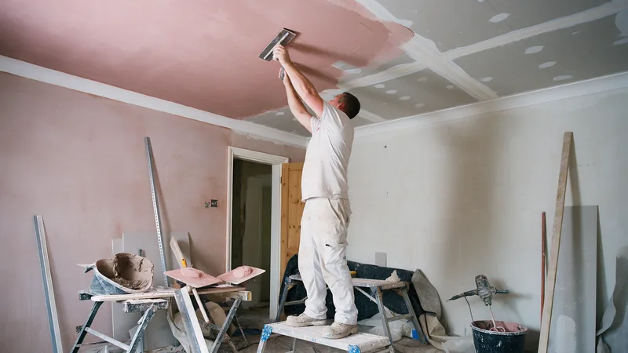

Patch, overboard, or take it down
Three choices, and the ceiling decides, not the budget. A small area where the board has been cut or a light has moved can be cut out square, pieced in, taped and skimmed, and it will be invisible. Where an old lath and plaster ceiling is sound but tired, it can sometimes be overboarded: new plasterboard screwed up through the old finish into the joists above, then skimmed. That keeps the mess down a lot.
Where plaster has already let go in one area of a lath ceiling, taking the whole thing down is usually the honest answer, because the rest of the key has aged exactly the same way and will follow within a few years. It is more work and more mess on the day, and it is the last time anybody has to think about that ceiling.
After a leak
Two jobs, and in this order. Stop the water and find where it came from, which is a plumber or a roofer rather than us. Then let the ceiling dry out and see what is left. Boarding and skimming while something above is still wet is wasted money, and we will not do it. A brown ring that has dried out and is firm can often be sealed with a stain block and skimmed over. A section that has gone soft or sagged has lost its grip and comes down.
If a ceiling is actively sagging or has partly come down, that is the urgent help page rather than this one: water off, electrics off in that room, nobody underneath it.
Artex and old ceilings
Most artex ceilings can be skimmed over rather than stripped, which is quieter, cleaner and cheaper. The high points get knocked back, a coat of bonding agent goes on, then two coats of finish. But artex from before the year two thousand can contain asbestos in the coating, so it gets sampled and tested by a lab before anybody sands, scrapes or dry removes any of it. If the test comes back positive, removal is a licensed firm's job and not ours, and skimming over it undisturbed is usually the sensible route. There is a full article on it under Advice.
 Generated photo
Generated photoGenerated for this demo. Not a photograph of a real job.

Generated photoEverything overhead and off a hop up, which is why a ceiling takes longer than a wall of the same size.
On the job
How this one usually goes.
- Find out what is holding it upTap it, press it gently, look for a line of nail heads or a bulge, and get into the loft where we can to see the other side. That decides patch, overboard or down.
- Make sure it is dry and the cause is fixedIf water has been at it, nothing happens until whatever leaked is mended and the ceiling has given up its water.
- Protect the room and clear the floorEverything out from underneath, sheets down, and the doorway sheeted if a ceiling is coming down, because that is the dustiest job in the house.
- Board or piece inNew board screwed into the joists, joints staggered, scrim tape on every joint. Screws rather than nails, so nothing pops back out in two winters.
- Two coat skim, then clear upFinish coat in two passes, troweled closed. Then the floor scraped and brushed and the old ceiling taken away with us.
A sample running order for this demo. Yours depends on the house and what the walls turn out to be doing.
Questions
Asked about this job.
My ceiling has a brown stain. Is that a repair?
Depends whether it is dry and firm. A dried out stain can usually be sealed with a stain block and skimmed over, because the plaster is still gripping. If the area has gone soft, sagged or sounds hollow, it has let go and that part has to come out. And the leak has to be fixed first either way.
Can you just patch where the light was?
Yes, that is a straightforward one. Cut out square to the joists, piece in new board, tape it and skim the area out wide enough that the joint is not sat in the middle of a flat ceiling where light will find it.
Lath and plaster: down or overboard?
If the key is still good and it is only tired, overboarding is a lot less mess and works well. If any of it has let go, down is the honest answer, because the rest has aged the same way. We will tell you which it is after tapping it.
Will the new bit match the old ceiling?
If we skim the whole ceiling, yes. If we skim only a patch, it will be flat and sound but a careful eye in raking light can sometimes still find the edge. Where a ceiling is going to be painted in a pale colour we usually suggest doing the lot.
How long does a ceiling take?
A patch is a few hours. A ceiling skimmed over artex is usually a day. Down, reboarded and skimmed is one to two days depending on the size and how much has to come out, plus drying before paint.
General trade knowledge written for this demo, not advice on your property.
Our work
Sample jobs like this.
Generated photoReboarded overheadAshton-under-Lyne Sample Generated photoAfter a leak upstairsMossley Sample
Generated photoAfter a leak upstairsMossley Sample Generated photoCornice, before the repairStalybridge Sample
Generated photoCornice, before the repairStalybridge SampleMade up samples with generated pictures. Tap one for the detail.
Also
The other things we do.
Skimming walls and ceilings
A thin finish coat over plaster that is already sound, two passes, flat enough that the light across it shows nothing.
More →Full replastering
Old plaster off back to the brick, the background sorted, an undercoat ruled flat, then the finish. For walls a skim would only follow.
More →Rendering
Sand and cement in two coats, or a modern silicone thin coat that comes coloured through. The wall underneath decides which.
More →Coving and cornice
Plain coving run and mitred so you cannot find the joints, or an ornate cornice matched and run back in by hand.
More →Dry lining and plasterboard
Board on studs, battens or dabs, taped and skimmed. New walls, cold walls and ceilings that want starting again.
More →Shall somebody come and tap the walls?
Tell us which rooms and your postcode. If a ceiling has come down or water is coming through, use the urgent line instead.